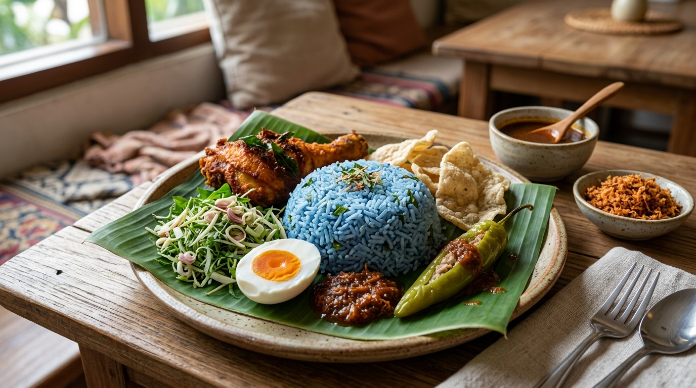

🌶️
🍋

Cadangan Sajian Tradisional (Gambar Hiasan)
Keenakan Tradisi,
Nikmati Keenakan Nasi Kerabu Mak Jah
STATUS
KEMAS KINI
Sah Pemilik
Jom nikmati nasi kerabu dan hidangan tradisional Melayu yang menyelerakan. Hubungi Nasi Kerabu Mak Jah untuk pertanyaan menu dan tempahan.
Lokasi & Waktu Operasi
Kawasan Premis
Sungai Petani, Kedah, Malaysia
Alamat khusus kedai/gerai jualan akan dikemas kini sebaik sahaja disahkan oleh pemilik perniagaan. Pautan peta memaparkan carian kawasan umum Sungai Petani.
Waktu Operasi
Setiap hari: 2.00 petang – 11.00 malam
Waktu operasi ini adalah maklumat yang diberikan oleh pemilik perniagaan. Sila sahkan hari operasi dan status cuti sebelum berkunjung.
Maklumat Media Sosial Rasmi
Nama Akaun Rasmi: -
Nama akaun ini adalah maklumat rasmi yang didaftarkan bagi Nasi Kerabu Mak Jah. Pautan URL langsung ke profil akan dihubungkan sebaik sahaja disahkan oleh pemilik perniagaan. Tiada pautan luaran rekaan atau rosak dijana.